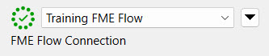
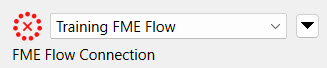
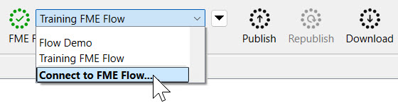
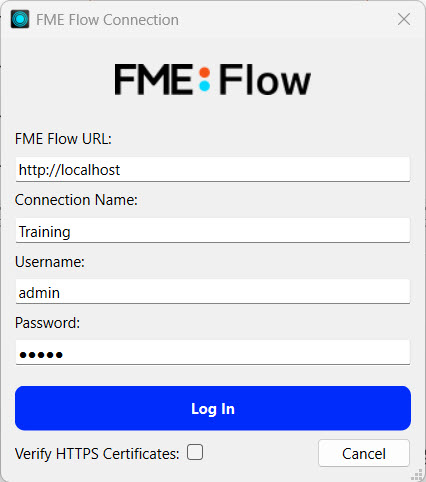

Learning Objectives
After completing this lesson, you’ll be able to:
- Connect to FME Flow from FME Workbench using a web connection.
- Understand how FME Flow and FME Form work together to maximize the benefits of the FME platform.
- Understand why FME Form and FME Flow need to communicate.
Resources
- Starting workspace | C:\FMEData\Workspaces\DeployWorkflowsWithFMEFlow\publish-a-workspace-to-fme-flow.fmw
FME Workflows
FME Workbench, an application of FME Form, is the no-code authoring environment used to create workspaces. FME workspaces serve to manipulate and integrate data. The key components of FME Workspaces are:
- Readers: Components that pull data from sources, including databases, files, and web services.
- Transformers: Tools that modify, analyze, or restructure data as required in the workflow.
- Writers: Components that output the processed data to a specific format or destination.
After you author workspaces in FME Workbench, you must transfer them to FME Flow. We call the process of transferring workspaces from FME Workbench to FME Flow publishing. Once on FME Flow, you can deploy them in event-driven or scheduled Automations, real-time data Streams, or no-code web apps. FME Form and FME Flow are necessary to elevate your workflows to their full potential in the FME platform.
FME Workbench is a client of FME Flow, making the two products a client-server pair. The pair must communicate to complete the process of creating, publishing, and automating workflows you build in FME Form and taking advantage of FME Flow's scalable processing power and automation features.

Servers are applications that provide a resource or service.
Clients make requests of servers to access a resource or service.
Together, a client-server pair form a distributed application structure. Usually, the client and server exist on separate hardware and communicate over computer networks, but sometimes both the server and client exist on the same system.
FME Flow Web Connections
FME Flow is a web application; therefore, FME Form uses a web connection to authenticate and communicate with it. Web connections are secure, reusable credentials that allow FME Form to connect to web services and cloud platforms.
The FME Flow Connection widget in the toolbar displays an FME Flow web connection for quick access. The display to the left of the connection name indicates if the connection is communicating successfully with FME Flow.


Expand the connection drop-down to select a different connection or access a shortcut to create a new one.

The publishing wizard also provides the same connection options while publishing, which we will cover in the next lesson.
Clicking Connect to FME Flow opens the FME Flow Connection window, where you input your FME Flow URL and credentials. The FME Flow URL is the address you use to access FME Flow in a web browser. If your organization uses a single sign-on (SSO) system, like Azure AD, you’ll have the option to log in through that system after entering your URL.

To edit or manage multiple web connections and their underlying web services, go to Tools > FME Options > Web Connections. For more information, see our documentation on Using Web Connections.
Exercise
Open FME Workbench and make sure your FME Workbench is successfully connected to FME Flow.
If you're taking a Safe Software live training course, we have already created the web connection to FME Flow for as Training FME Flow. For this connection, http://localhost is used as the FME Flow URL since FME Workbench and FME Flow are on the same machine. The username is admin and the password is FMElearnings.
If you encounter issues creating your web connection to FME Flow, see our documentation Connecting to FME Flow or our troubleshooting guide Connecting to FME Flow from FME Workbench.